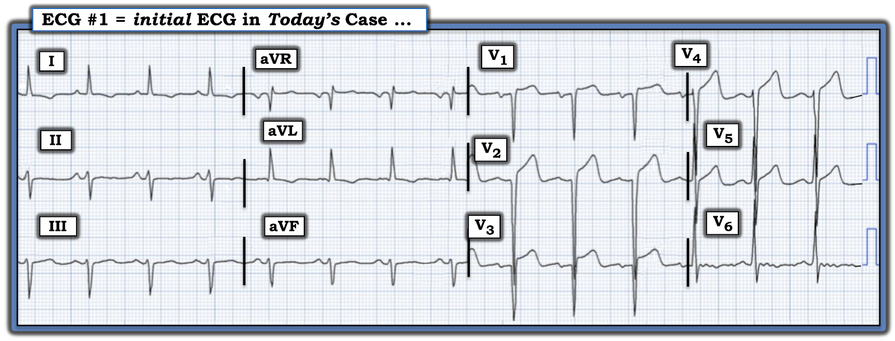
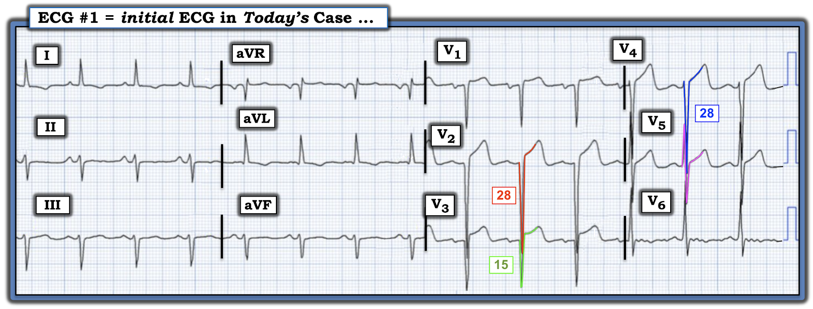
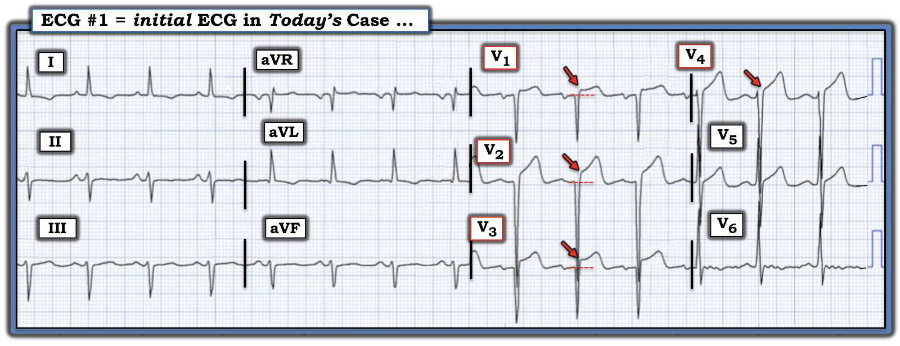
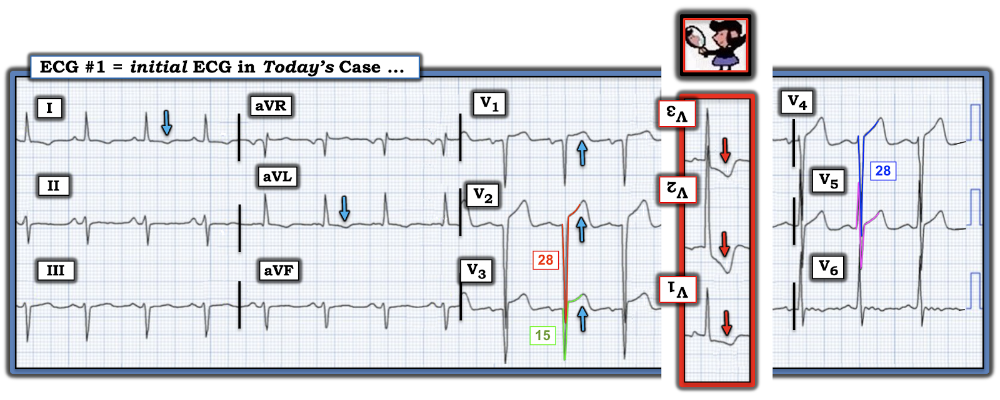
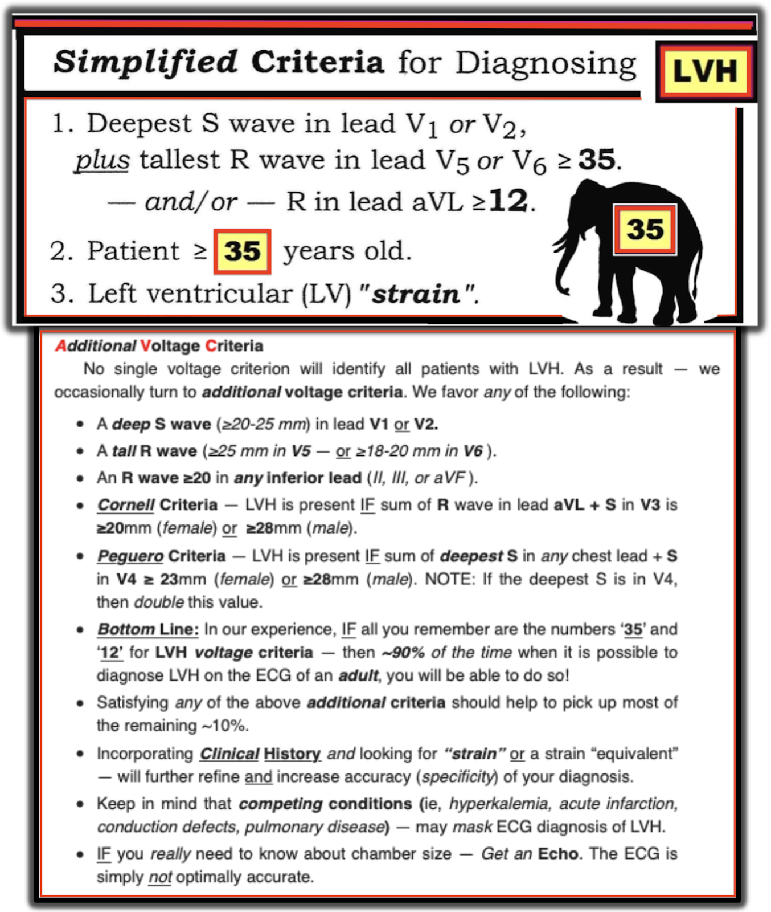
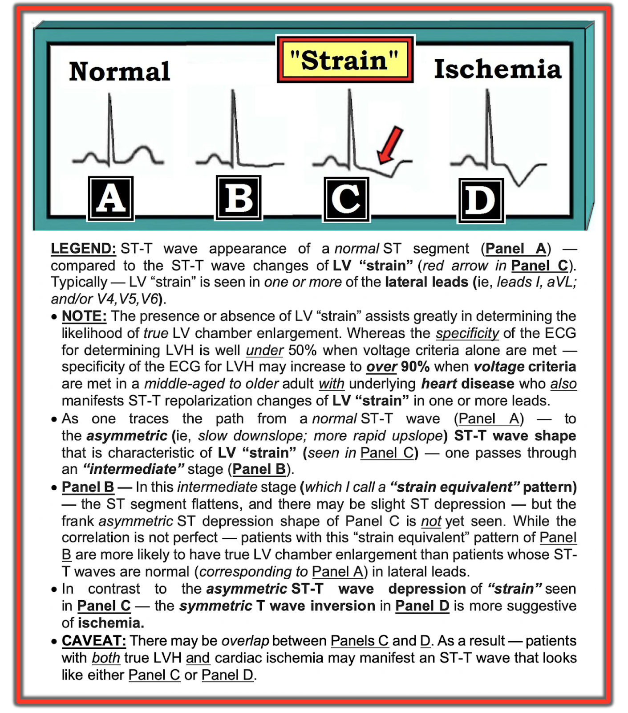

ECG Blog #461 — STEMI, phình thất trái hay không phải cả hai?
Tôi được gửi điện tâm đồ trong Hình-1 — ban đầu không kèm theo bất kỳ bệnh sử nào.
- Bạn sẽ đọc bản ghi này như thế nào?
- — Chẩn đoán phân biệt của BẠN cho bản ghi này là gì?


===================================
Mối lo ngại hiển nhiên:
- Tôi nhận ra ngay lý do mình được gửi bản ghi này: ==> có ST chênh lên ở các chuyển đạo trước tim phía trước!
===================================
SUY NGHĨ BAN ĐẦU CỦA TÔI về Hình-1:
Xem xét một cách hệ thống:
- Có nhịp xoang đều tần số ~85/phút (sóng P dương ở chuyển đạo II — với khoảng PR hằng định và bình thường).
- QRS hẹp (tức là thời gian không quá 1/2 ô lớn).
- QTc cùng lắm chỉ kéo dài ở mức giới hạn.
- Trục lệch trái rõ, dựa trên phức bộ QRS âm là chủ yếu ở chuyển đạo aVF. Tiêu chuẩn LAHB (blốc phân nhánh trái trước — Left Anterior HemiBlock) được thỏa mãn — vì QRS âm là chủ yếu ở chuyển đạo II (tức là cho thấy trục mặt phẳng trán âm hơn -30 độ).
Về Lớn các buồng tim:
- Không có tiêu chuẩn lớn nhĩ (Đã ôn tập trong ECG Blog #75). Vì vậy, mặc dù có thành phần âm ở phần cuối sóng P tại chuyển đạo V1 — tôi thiên về không chẩn đoán LAA, vì mức độ âm này của sóng P ở V1 có độ đặc hiệu hạn chế để chỉ ra LAA.
- Dù vậy — điện thế cho LVH tăng rõ rệt!
Có LVH rõ rệt:
- Tôi đã nhiều lần ôn lại tiêu chuẩn chẩn đoán LVH (Xem PHẦN BỔ SUNG bên dưới — để ôn lại các tiêu chuẩn LVH mà tôi ưa dùng — cũng như ECG Blog #73 để bàn luận đầy đủ).
- Theo Hình-5 (trong Phần bổ sung bên dưới) — biên độ sóng S tăng rõ rệt trên điện tâm đồ hôm nay (đạt độ sâu sóng S = 28 mm ở chuyển đạo V2 — và độ sâu sóng S = 28 mm ở chuyển đạo V4 — như trong Hình-2).
- ĐIỂM THEN CHỐT (PEARL) #1: Đôi khi với LVH — thay vì thấy sóng R cao kèm tăng gánh thất trái (LV "Strain") ở các chuyển đạo trước tim bên — ta lại thấy hình ảnh ngược lại kiểu "soi gương" ở các chuyển đạo bên phải V1,V2 (tức là LVH có thể biểu hiện bằng sóng S sâu ở phía trước — kèm ST chênh lên ở các chuyển đạo V1,V2 và/hoặc V3). Đây chính xác là điều ta thấy ở ca hôm nay!


Hoàn tất Cách tiếp cận hệ thống của chúng ta (với Thay đổi Q-R-S-T):
- Sóng Q — Có một sóng q vách rất nhỏ ở chuyển đạo aVL — nhiều khả năng không quan trọng. Nhưng có sóng QS lớn ở các chuyển đạo phía trước V1,V2,V3.
- Tăng tiến sóng R — Do các sóng QS lớn này ở chuyển đạo phía trước, có tăng tiến sóng R kém (với vùng chuyển tiếp bị chậm lại đến giữa chuyển đạo V5 và V6).
- Đoạn ST-sóng T — Tôi đã vẽ đường nền đoạn PR ở các chuyển đạo V1,V2,V3 của điện tâm đồ hôm nay để làm nổi bật mức độ ST chênh lên (mũi tên ĐỎ trong Hình-3 chỉ điểm J làm mốc để đánh giá mức ST chênh lên).
- Ở các chỗ khác, 3 chuyển đạo dưới và chuyển đạo V6 cho thấy sóng ST-T dẹt không đặc hiệu. Cuối cùng, các chuyển đạo bên I và aVL có sóng T đảo ngược nông, kín đáo — phù hợp với hình ảnh "tương đương tăng gánh" (như tôi làm nổi bật ở Ô B của Hình-6 trong Phần bổ sung hôm nay).


Tổng hợp lại tất cả:
Điện tâm đồ hôm nay cho thấy nhịp xoang ~85/phút — QTc ở mức giới hạn — LAHB — LVH rõ rệt — và — sóng QS ở chuyển đạo V1,V2,V3, với không hơn một sóng r rất nhỏ ở chuyển đạo V4 — thêm vào đó, ST chênh lên bắt đầu từ chuyển đạo V1 và kéo dài đến chuyển đạo V5. Về lâm sàng — điều này có thể chỉ ra bất kỳ khả năng nào sau đây (Xem Hình-4):
- i) Nhồi máu cơ tim trước vách có thể đã xảy ra vào một thời điểm nào đó — như gợi ý bởi sóng QS ở các chuyển đạo V1,V2,V3.
- ii) Việc có LVH rõ rệt được gợi ý mạnh bởi biên độ QRS ở chuyển đạo trước tim tăng rất nhiều (với sóng S = 28 mm ở chuyển đạo V2 và V4 — như trong Hình-4) — kèm hình ảnh "tương đương tăng gánh" ở các chuyển đạo bên I và aVL (mũi tên XANH ở các chuyển đạo này).
- ST chênh lên ở chuyển đạo phía trước có thể chỉ đơn giản phản ánh tăng gánh thất trái (LV "strain") ở bệnh nhân có LVH rõ rệt; khi LVH biểu hiện bằng sóng S sâu ở phía trước (thay vì sóng R cao ở phía bên) — có thể tạo ra một véc-tơ trong đó thất trái phì đại nằm ở phía sau đối kháng với các lực khử cực phía trước bình thường, do đó làm giảm (và đôi khi làm mất) sóng r ở phía trước.
- ĐIỂM THEN CHỐT (PEARL) #2: Như trong ô chèn màu ĐỎ ở Hình-4 — Trong những trường hợp như vậy, thay đổi sóng ST-T của tăng gánh thất trái (thường thấy ở các chuyển đạo bên) — có thể biểu hiện thành hình ảnh sóng ST-T "tăng gánh" ngược lại kiểu soi gương ở các chuyển đạo phía trước. Điều này có thể giải thích ST chênh lên phía trước thấy ở ca hôm nay (mũi tên XANH ở các chuyển đạo V1,V2,V3).
- iii) Có thể có tắc cấp động mạch vành LAD (động mạch liên thất trước — Left Anterior Descending) hiện đang chồng lên điện tâm đồ của một bệnh nhân có LVH từ lâu, có lẽ kèm cả nhồi máu thành trước trước đây.
- iv) Các dấu hiệu trong Hình-4 có thể phản ánh phình thất trái.
Kết luận:
Khi xem xét bản ghi hôm nay mà ban đầu tôi đọc không kèm bất kỳ bệnh sử nào — tôi nghĩ bất kỳ khả năng chẩn đoán nào ở trên cũng có thể hiện diện. Mặc dù tôi nghi ngờ rằng các dấu hiệu điện tâm đồ trong Hình-4 không phải cấp tính — tôi hoàn toàn không chắc chắn về nghi ngờ đó chỉ từ một điện tâm đồ duy nhất này.
- Rõ ràng — cần có bệnh sử chi tiết để đánh giá lâm sàng đầy đủ. Bệnh nhân này có tiền sử bệnh tim không? Bệnh nhân có CP không? (đau ngực — Chest Pain). Nếu có — CP bắt đầu khi nào? CP có còn vào thời điểm ghi điện tâm đồ trong Hình-4 không?
- Liệu ta có tìm được điện tâm đồ trước đây của bệnh nhân này không (nhằm xác định sóng QS và ST chênh lên là mới hay cũ).
- Đặc biệt nếu CP vẫn đang tiếp diễn — cần điện tâm đồ ghi lại (tìm dấu hiệu tiến triển cấp tính) — cùng với Troponin, siêu âm tim và đánh giá thêm cho đến khi ta xác định được liệu có một quá trình cấp tính đang diễn ra hay không.


DIỄN TIẾN CỦA CA BỆNH:
Sau đó tôi mới biết bệnh sử của ca hôm nay — đó là một người đàn ông trung niên bị đái tháo đường và tăng huyết áp — đến khoa cấp cứu (Emergency Department) vì đau bụng khiến ông thức giấc.
- Bệnh nhân tăng huyết áp rõ rệt tại khoa cấp cứu — nhưng không có CP.
- X-quang ngực bình thường.
- Troponin âm tính.
- Siêu âm tim cho thấy LVH đáng kể với chức năng thất trái bình thường và không có rối loạn vận động thành.
- Xạ hình tưới máu âm tính với thiếu máu cục bộ.
- Tìm thấy các điện tâm đồ trước đây trong hồ sơ bệnh nhân — cho thấy các dấu hiệu tương tự: LVH rõ rệt kèm ST chênh lên ở phía trước được quy cho tăng gánh thất trái.
- Tóm lại: Bệnh nhân được điều trị đau bụng. Biến cố tim cấp tính đã được loại trừ. Không thông tim.
"Điều Cần Nhớ"
Thông điệp: ST chênh lên ở chuyển đạo phía trước không nhất thiết chỉ ra nhồi máu cấp khi bệnh nhân có LVH biểu hiện bằng sóng S sâu ở phía trước. Trong những trường hợp như vậy — ST chênh lên phía trước có thể chỉ đơn giản phản ánh tăng gánh thất trái (theo "nghiệm pháp soi gương" (Mirror Test) được minh họa trong ô chèn màu ĐỎ ở Hình-4).
- Có thể cần đánh giá thêm trong những trường hợp như vậy để làm rõ điều gì có thể là "mới" so với "cũ" (tức là để loại trừ một biến cố cấp tính mới có thể chồng lên LVH đã có từ lâu).
- Điểm MẤU CHỐT: ST chênh lên phía trước ít có khả năng là biểu hiện tăng gánh thất trái nếu sóng S ở phía trước không lớn hơn mức thường gặp (tức là nếu không có LVH).
==================================
Lời cảm ơn: Xin cảm ơn người đã gửi ca bệnh hôm nay mà không nêu danh.
==================================
Các bài ECG Blog liên quan đến ca hôm nay:
- ECG Blog #205 — Ôn tập Cách tiếp cận hệ thống của tôi khi đọc điện tâm đồ 12 chuyển đạo.
- ECG Blog #73 — Ôn tập "quan điểm của tôi" về chẩn đoán LVH trên điện tâm đồ.
- ECG Blog #92 — Trình bày một góc nhìn khác về chẩn đoán LVH trên điện tâm đồ.
- ECG Blog #424 — Một ví dụ khác về trường hợp LVH rõ rệt có thể biểu hiện ST chênh lên ở phía trước.
- Với các ca tương tự ca hôm nay, trong đó LVH có thể giả thiếu máu cục bộ — Xem Bình luận của tôi ở cuối trang của các bài sau trên Dr. Smith's ECG Blog — bài ngày 29 tháng 11 năm 2023 — ngày 20 tháng 6 năm 2020 — ngày 31 tháng 3 năm 2019 — ngày 29 tháng 3 năm 2019 — và bài ngày 27 tháng 12 năm 2018.
- ECG Blog #218 — Ôn tập CÁCH xác định một sóng T là tối cấp?
- ECG Blog #230 — Ôn tập CÁCH so sánh các điện tâm đồ liên tiếp (tức là "Bạn đang so sánh Táo với Táo hay với Cam?").
==================================
PHẦN BỔ SUNG (21/12/2024): Tôi đã bổ sung bên dưới, trong Hình-5 và Hình-6, tài liệu thêm giúp chẩn đoán LVH và tăng gánh thất trái trên điện tâm đồ.



